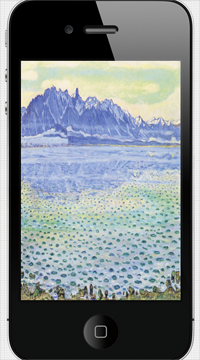
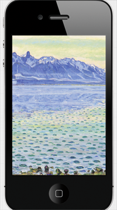

Here’s an example whose layout is responsive to changes of orientation and device:
Getting Started
We’ll use one WeView (the rootView) to layout the contents of the screen.
The Activity Indicator
We’ll start with the easiest element of the layout, the activity indicator.
We add the activity indicator to the rootView with [addSubviewWithCustomLayout:]. This method can be used for any subviews that are laid out alone.
In this case, we don’t need to need configure the layout or the subview. The default behavior is to center-align the subview at its desired size.
The Header
We’ll use a separate WeView for the header, the headerView.
The headerView is populated with a “title” UILabel and a “tag” button.
The UILabel and button use separate layouts; the label is center-aligned (the default behavior) and the tag button is right-aligned.
The headerView is added to the rootView with top alignment.
We call setHStretches on the headerView so that it stretches horizontally, extending to the edges of the screen.
The Pillbox Buttons
We add the pillbox buttons in a horizontal layout.
We configure the buttons’ layout with bottom alignment.
The Background
The background image is the trickiest part of the layout.
If we simply wanted to stretch the background image’s UIImageView to fill the screen, we could simply:
Configure the UIImageView with [setStretches], so that it would stretch vertically and horizontally.
Configure the UIImageView with [setIgnoreDesiredSize], so that its size was based solely on the available space in the layout and add it to the rootView in its own layout.

But simply stretching the image to fill the screen distorts its content. We want to preserve the aspect ratio of the image as we stretch it, although this will cause the image to extend offscreen and be cropped.

Therefore, we wrap the the background image in a separate WeView and add the UIImageView using [addSubviewWithFillLayoutWAspectRatio].